最近2星期的热点话题是：天朝61398部队的御用骇客。今天转载一些网文和图片，八卦一下御用骇客被曝光的过程。
话说美国方面这次掌握的材料已经很充分了（看完本文，你会意识到这点）。但是天朝外交部摆出一副"死猪不怕开水烫"的架势——打死不承认。
在此次事件中，最有价值的信息，就是美国计算机安全公司 Mandiant 发布的报告（共76页，下载链接在"这里"）。这份报告算是比较详细的，介绍了御用骇客的种种事迹和入侵手法。对网络安全有兴趣的同学，这份报告值得一读。
考虑到很多读者比较懒，俺贴出该报告的其中几张截图，再配上俺的简要解说。
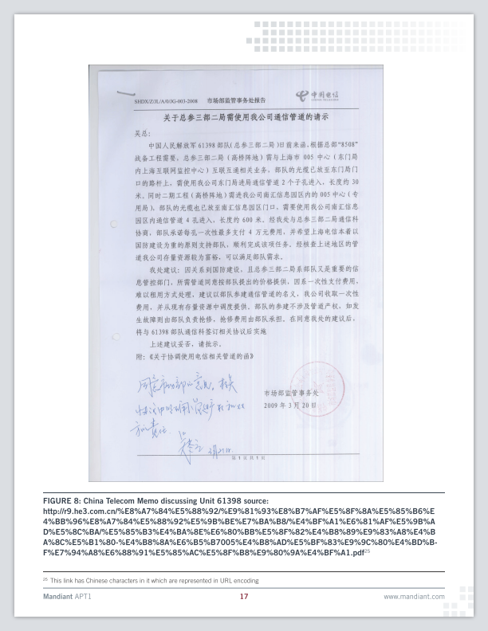
这是中国电信的一个内部文件（截图下方是发现该文件的网址）。
里面明确提到了：61398部队隶属总参三部二局，位于高桥（上海浦东）
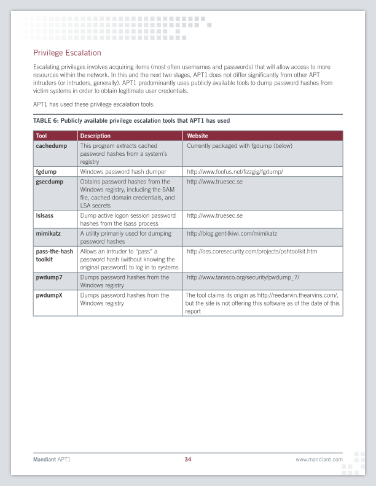
御用骇客收集用户口令的工具

御用骇客收集 Windows 系统信息的批处理脚本
下面几张是美国方面监控到的，入侵美国公司所用的 IP 地址，有相当多的攻击来源，是来自于【上海市浦东区高桥镇】。
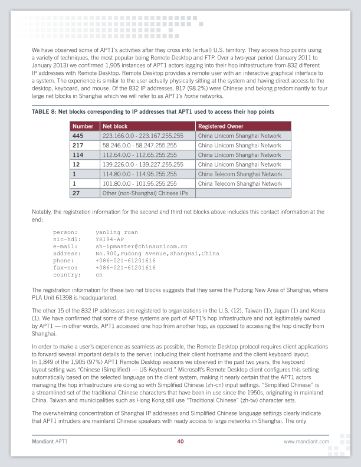 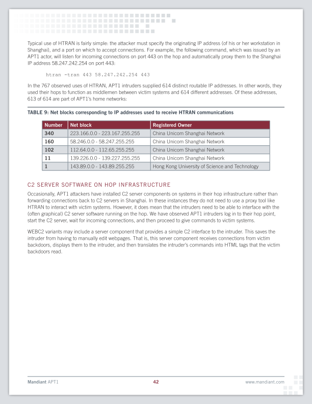
如果你看过俺写的《如何隐藏你的踪迹，避免跨省追捕》可能会觉得奇怪：这帮御用骇客难道不用代理吗？
俺来解释一下：
其一，
御用骇客的人数很多，素质也是参差不齐。
人多了之后，难免会有人不遵守纪律。有些人估计是嫌麻烦，没做到【入侵的全过程都通过代理】。
只要有 1% 的人出现疏忽，那么整个团队所在的位置就会被曝光。
其二，
御用骇客跟民间骇客不同。民间骇客搞入侵，一旦暴露有可能会被抓坐牢。所以，有经验的民间骇客会更小心谨慎。而御用骇客是朝廷的人，不用担心被抓。因为缺乏心理上的顾虑，也就没有那么小心谨慎。
某些替朝廷辩护的五毛会说，这是别国的黑客利用中国的肉鸡做跳板。
如果真的是这样，那就非常奇怪了：为啥别国的黑客碰巧都用了“上海浦东区高桥镇的网段”当肉鸡？而且碰巧高桥镇还驻扎着一个解放军的网络战部队？
他暴露的主要问题在于，他使用了相同的邮箱（uglygorilla@163.com），相同的网名（UglyGorilla）注册了如下网站：
1. 中国军网
该网站隶属《解放军报》旗下。2004年，张召忠（赫赫有名的天朝战略忽悠局局长）做客该网站，接受网友的在线提问。当时汪东曾向张召忠在线提问，问题内容是关于"中国网络战"。
看来张召忠的忽悠能力很强啊。连御用骇客都成为他的粉丝了。
2. rootkit.com
这是国外知名的黑客网站，专门提供 "木马/后门" 等方面的资料。
该网站后来被大名鼎鼎的“匿名黑客组织”攻破并爆库，用户数据库中就有
3. www.pudn.com
国内开发人员网站，美国安全专家在该网站上查到了注册用户
另外，他还喜欢处处留名——在自己开发的木马工具中，写了如下签名：
细心的同学应该已经发现了，这句签名存在英语的语法错误。美国专家显然也发现这一点。他们还整理了一个清单，列出了入侵美国公司的木马软件中，存在的各种英语语法错误。截图如下：
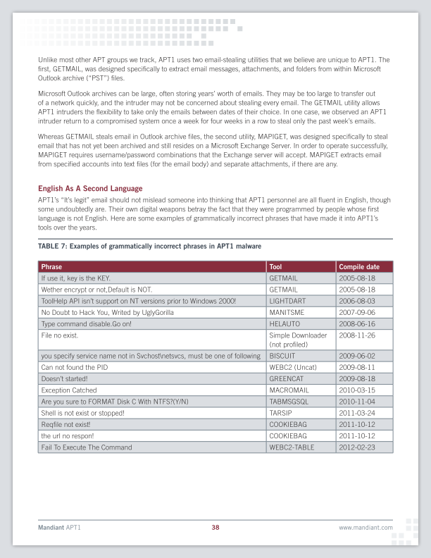
下面两张图片，是 Mandiant 报告中关于“汪东”的部分。
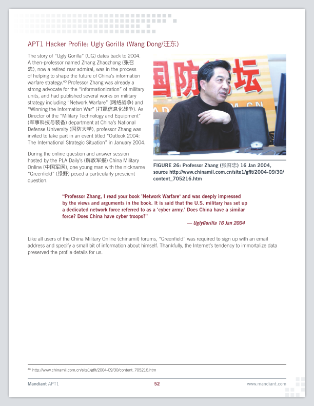 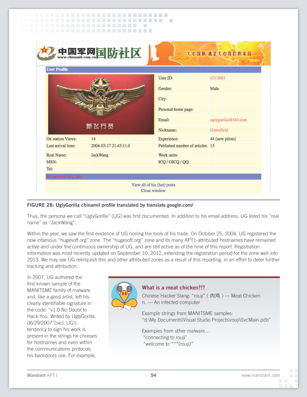
关于“汪东”的案例，给大伙儿的教训就是：
如果你要从事有危险的网络活动，一定【不要混用】网络帐号（包括：邮箱、IM、网站用户名、等）。
比如俺这个“编程随想”的身份，涉及到的所有网络帐号（包括 G+、Twitter、OneDrive）都是单独的，与俺日常使用的帐号【完全隔离】。
不光帐号隔离，连上网操作俺都是在【不同的】虚拟机中分别进行，以确保更彻底的隔离性。
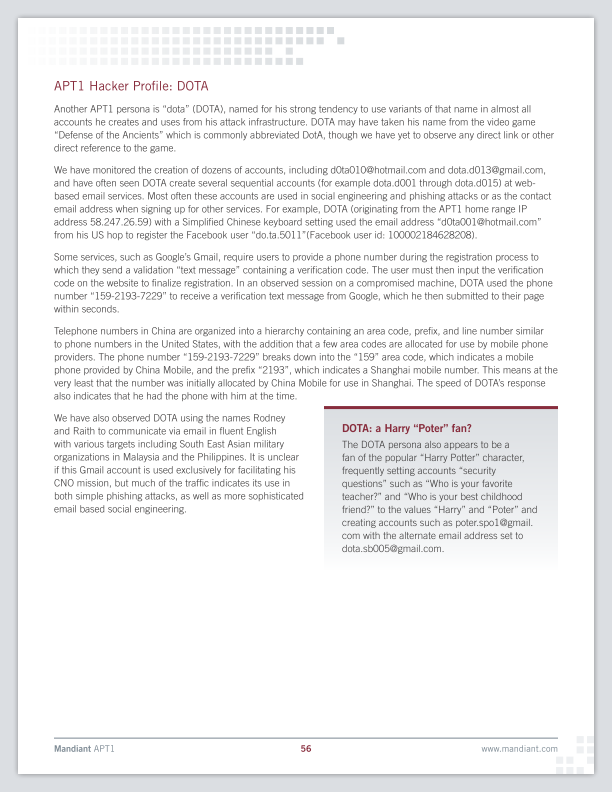
此人注册了很多邮箱（比如这个系列：从
Mandiant 的报告提到说，由于创建的帐号太多，所以口令管理是一件麻烦事。DOTA 经常使用基于键盘布局的口令（比如：
很可能是因为 DOTA 的口令不够强，导致 Gmail 邮箱帐号被 Mandiant 的专家攻破了（如下图）。拿到 DOTA 的 Gmail 邮箱之后，DOTA 的很多入侵行为就显而易见了。
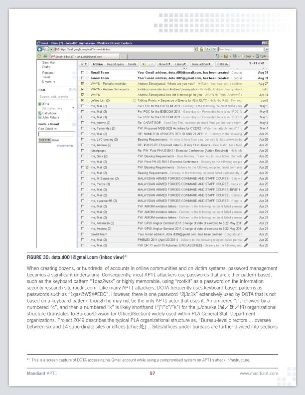
（DOTA 的某个 Gmail 邮箱的截图）
Mandiant 的报告还提到说，DOTA 除了使用基于键盘布局的口令，还使用了这个口令：
另外，DOTA 注册邮箱使用了手机接收验证码，所以他的手机也被曝光了，号码是：
连手机号也被查出来，DOTA 几乎被扒光了 :)
关于“DOTA”的案例，给大伙儿的教训就是：
网络帐号的密码一定要强。你在【不同网站】使用的密码一定要不同，而且要让人看不出规律。
关于密码的设计，可以参考俺这篇博文《如何构造安全的口令/密码》
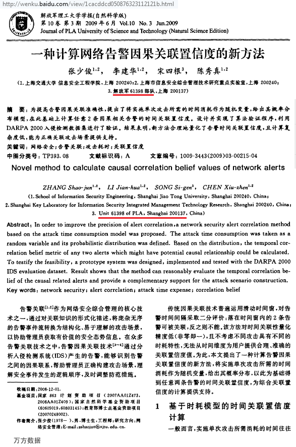
（61398部队的成员发表的信息安全相关论文）
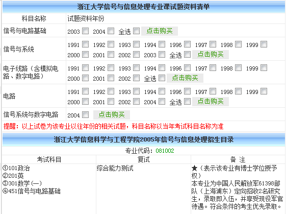
（61398部队在浙江大学招收定向研究生）
顺便再分享几篇与朝廷御用骇客相关的网文。（以下某些链接需翻墙）
《彭博商业周刊：中国网络间谍被西方专家搜索曝光 @ BBC》
《中国军方是黑客袭击者 @ 纽约时报》
《“匿名黑客组织”无意中帮助曝光中国黑客身份 @ Solidot》
俺博客上，和本文相关的帖子（需翻墙）：
《如何防止黑客入侵》（系列）
《如何隐藏你的踪迹，避免跨省追捕》（系列）
《社会工程学扫盲》
《八卦一下天朝党政军的情报机构》
《每周转载：关于黑客文化和黑客精神》
话说美国方面这次掌握的材料已经很充分了（看完本文，你会意识到这点）。但是天朝外交部摆出一副"死猪不怕开水烫"的架势——打死不承认。
★图片若干
在此次事件中，最有价值的信息，就是美国计算机安全公司 Mandiant 发布的报告（共76页，下载链接在"这里"）。这份报告算是比较详细的，介绍了御用骇客的种种事迹和入侵手法。对网络安全有兴趣的同学，这份报告值得一读。
考虑到很多读者比较懒，俺贴出该报告的其中几张截图，再配上俺的简要解说。
◇中国电信授权61398部队接入上海005中心
这是中国电信的一个内部文件（截图下方是发现该文件的网址）。
里面明确提到了：61398部队隶属总参三部二局，位于高桥（上海浦东）
◇御用骇客常用的工具
御用骇客收集用户口令的工具
御用骇客收集 Windows 系统信息的批处理脚本
◇御用骇客使用的 IP 地址
下面几张是美国方面监控到的，入侵美国公司所用的 IP 地址，有相当多的攻击来源，是来自于【上海市浦东区高桥镇】。
如果你看过俺写的《如何隐藏你的踪迹，避免跨省追捕》可能会觉得奇怪：这帮御用骇客难道不用代理吗？
俺来解释一下：
其一，
御用骇客的人数很多，素质也是参差不齐。
人多了之后，难免会有人不遵守纪律。有些人估计是嫌麻烦，没做到【入侵的全过程都通过代理】。
只要有 1% 的人出现疏忽，那么整个团队所在的位置就会被曝光。
其二，
御用骇客跟民间骇客不同。民间骇客搞入侵，一旦暴露有可能会被抓坐牢。所以，有经验的民间骇客会更小心谨慎。而御用骇客是朝廷的人，不用担心被抓。因为缺乏心理上的顾虑，也就没有那么小心谨慎。
某些替朝廷辩护的五毛会说，这是别国的黑客利用中国的肉鸡做跳板。
如果真的是这样，那就非常奇怪了：为啥别国的黑客碰巧都用了“上海浦东区高桥镇的网段”当肉鸡？而且碰巧高桥镇还驻扎着一个解放军的网络战部队？
◇被人肉的骇客之一：汪东（网名“Ugly Gorilla”）
他暴露的主要问题在于，他使用了相同的邮箱（uglygorilla@163.com），相同的网名（UglyGorilla）注册了如下网站：
1. 中国军网
该网站隶属《解放军报》旗下。2004年，张召忠（赫赫有名的天朝战略忽悠局局长）做客该网站，接受网友的在线提问。当时汪东曾向张召忠在线提问，问题内容是关于"中国网络战"。
看来张召忠的忽悠能力很强啊。连御用骇客都成为他的粉丝了。
2. rootkit.com
这是国外知名的黑客网站，专门提供 "木马/后门" 等方面的资料。
该网站后来被大名鼎鼎的“匿名黑客组织”攻破并爆库，用户数据库中就有
uglygorilla@163.com，且注册该帐号的 IP 地址（58.246.255.28）来自上海浦东高桥。3. www.pudn.com
国内开发人员网站，美国安全专家在该网站上查到了注册用户
UglyGorilla 的真名是“汪东”。另外，他还喜欢处处留名——在自己开发的木马工具中，写了如下签名：
v1.0 No Doubt to Hack You, Writed by UglyGorilla, 06/29/2007
细心的同学应该已经发现了，这句签名存在英语的语法错误。美国专家显然也发现这一点。他们还整理了一个清单，列出了入侵美国公司的木马软件中，存在的各种英语语法错误。截图如下：
下面两张图片，是 Mandiant 报告中关于“汪东”的部分。
关于“汪东”的案例，给大伙儿的教训就是：
如果你要从事有危险的网络活动，一定【不要混用】网络帐号（包括：邮箱、IM、网站用户名、等）。
比如俺这个“编程随想”的身份，涉及到的所有网络帐号（包括 G+、Twitter、OneDrive）都是单独的，与俺日常使用的帐号【完全隔离】。
不光帐号隔离，连上网操作俺都是在【不同的】虚拟机中分别进行，以确保更彻底的隔离性。
◇被人肉的骇客之二：DOTA
此人注册了很多邮箱（比如这个系列：从
dota.d001@gmail.com 到 dota.d015@gmail.com），主要用来伪造不同身份，搞社会工程学的入侵。（如果你没听说过“社会工程学”，可以看俺写的扫盲教程（链接在“这里”）Mandiant 的报告提到说，由于创建的帐号太多，所以口令管理是一件麻烦事。DOTA 经常使用基于键盘布局的口令（比如：
1qaz@WSX#EDC）。这种口令表面上复杂，实际上强度不够。很可能是因为 DOTA 的口令不够强，导致 Gmail 邮箱帐号被 Mandiant 的专家攻破了（如下图）。拿到 DOTA 的 Gmail 邮箱之后，DOTA 的很多入侵行为就显而易见了。
（DOTA 的某个 Gmail 邮箱的截图）
Mandiant 的报告还提到说，DOTA 除了使用基于键盘布局的口令，还使用了这个口令：
2j3c1k。Mandiant 的专家怀疑，2j3c1k 对应的中文的是：“2局3处1科”（编程随想注：61398部队隶属“总参3部2局”）。另外，DOTA 注册邮箱使用了手机接收验证码，所以他的手机也被曝光了，号码是：
159-2193-7229（中国移动上海号段）连手机号也被查出来，DOTA 几乎被扒光了 :)
关于“DOTA”的案例，给大伙儿的教训就是：
网络帐号的密码一定要强。你在【不同网站】使用的密码一定要不同，而且要让人看不出规律。
关于密码的设计，可以参考俺这篇博文《如何构造安全的口令/密码》
◇其它图片
（61398部队的成员发表的信息安全相关论文）
（61398部队在浙江大学招收定向研究生）
★引申阅读
顺便再分享几篇与朝廷御用骇客相关的网文。（以下某些链接需翻墙）
《彭博商业周刊：中国网络间谍被西方专家搜索曝光 @ BBC》
《中国军方是黑客袭击者 @ 纽约时报》
《“匿名黑客组织”无意中帮助曝光中国黑客身份 @ Solidot》
俺博客上，和本文相关的帖子（需翻墙）：
《如何防止黑客入侵》（系列）
《如何隐藏你的踪迹，避免跨省追捕》（系列）
《社会工程学扫盲》
《八卦一下天朝党政军的情报机构》
《每周转载：关于黑客文化和黑客精神》
版权声明
本博客所有的原创文章，作者皆保留版权。转载必须包含本声明，保持本文完整，并以超链接形式注明作者编程随想和本文原始地址：
https://program-think.blogspot.com/2013/02/weekly-share-41.html
本博客所有的原创文章，作者皆保留版权。转载必须包含本声明，保持本文完整，并以超链接形式注明作者编程随想和本文原始地址：
https://program-think.blogspot.com/2013/02/weekly-share-41.html